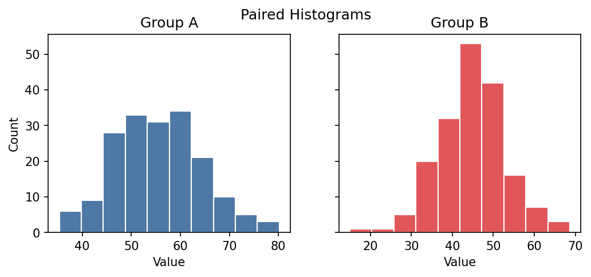
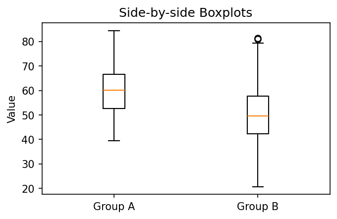
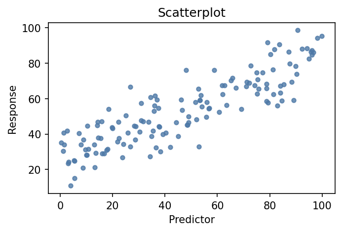
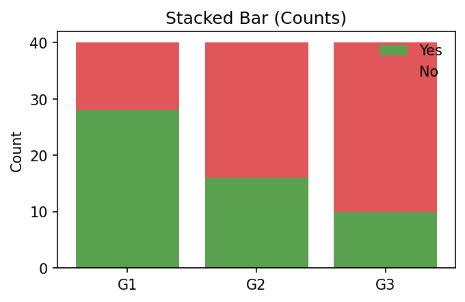
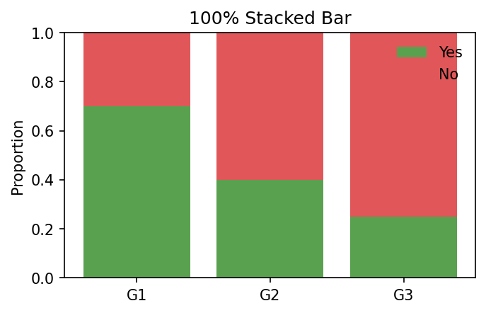
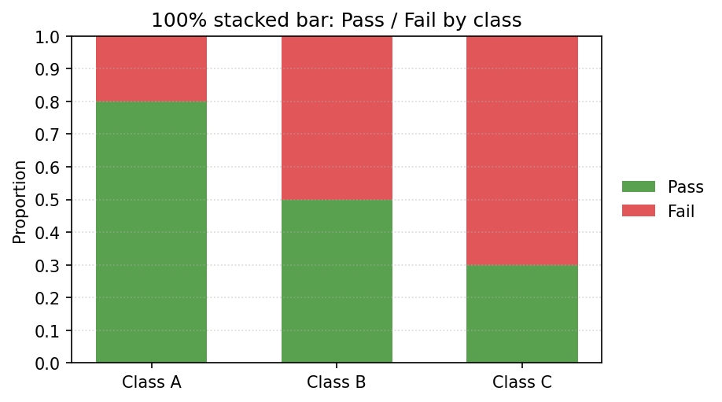
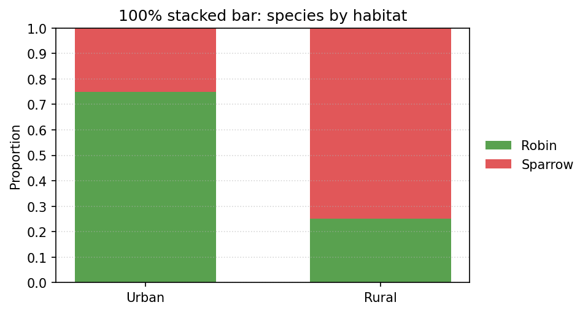
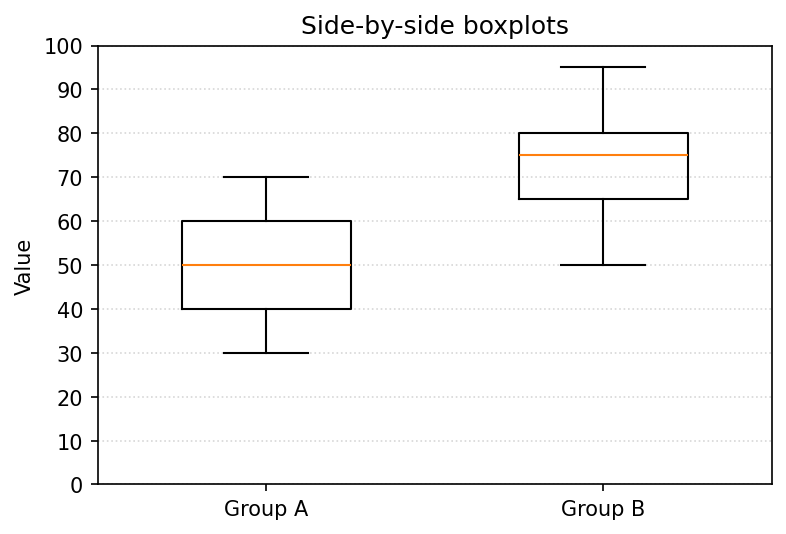
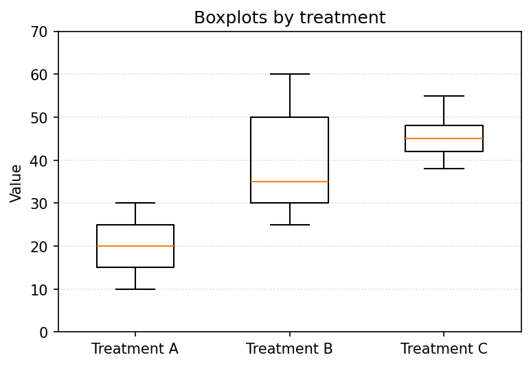

Module 3 — Quiz B (Concept Check)
Question bank · After Read 2 · open notes · unlimited attempts
Module 3, Quiz B: Concept check
Reading: Module 3 Read 2 (complete Read 1 + Quiz A first)
Canvas: Concept Check quiz (Module 3)
Apply graph selection, Pearson \(r\), association description, two-way table hand proportions, and graph image items from Read 2 (Sections 4–5: two categorical, two numerical).
Full integration and demo-lab R patterns → Synthesis.
Section A — Graphs: identify and interpret (Read 2 §2–3 + Read 1)
A1. Which graph for numerical by group?
You have a numerical outcome (body_mass_g) measured for three species (categorical). Which graph best compares the distributions?
A2. Which graph for two numerical?
You have two numerical variables: bill_length_mm (x) and flipper_length_mm (y). Which graph?
A3. Which graph for two categorical?
You have two categorical variables: species and island. Which graph shows how they co-occur?
A4. Read a boxplot
A boxplot has lower fence 10, \(Q_1=18\), median \(=25\), \(Q_3=32\), upper fence 45. What is the IQR?
A5. Skew from boxplot
A boxplot shows: min=5, \(Q_1=10\), median=12, \(Q_3=20\), max=50. Is the distribution skewed? Which way?
Click to reveal answers — Section A — Graphs: identify and interpret (Read 2 §2–3 + Read 1)
Boxplot per group (side-by-side boxplots with
groupon x-axis) — or grouped histograms/dot plots. Boxplots clearly show median, spread, and outliers per group.A scatterplot (bill length on the x-axis, flipper length on the y-axis).
A stacked bar chart (or 100% stacked bar) showing the species composition within each island.
IQR \(= Q_3 - Q_1 = 32 - 18 = 14\).
Right-skewed (positively skewed) — the upper whisker (12 to 50) is much longer than the lower whisker, and the median is closer to \(Q_1\) than \(Q_3\).
Section B — Choosing the right summary by variable type
B1. Two numerical variables
Both variables are numerical (height and weight). What is the first graph to make? What do you describe?
B2. Two categorical variables
Both variables are categorical (diet_type with 3 levels, outcome with 2 levels). Best graph and summary?
B3. Numerical + categorical
One variable is numerical (blood_pressure) and one is categorical (treatment_group: A/B/C). Best graph?
B4. Univariate: one categorical
One variable: habitat with levels Urban/Suburban/Rural. Best graph and summary?
Click to reveal answers — Section B — Choosing the right summary by variable type
Scatterplot. Describe form (linear/curved/none), direction (positive/negative/none), strength (strong/moderate/weak).
Stacked bar chart (counts or 100% proportions). Two-way table of counts and row/column proportions.
Side-by-side boxplots (treatment group on the x-axis) or grouped histograms. Summarize center and spread within each group.
Bar chart. Summary: counts and proportions per level.
Section C — Association description and two-way tables (Read 2)
C1. Positive association
Describe a positive association between two numerical variables in words.
C2. Form vs direction
What is the difference between form and direction in a scatterplot description?
C3. Row proportion
Two-way table: Robin Urban=8, Robin Rural=2 (row total=10). Sparrow Urban=4, Sparrow Rural=6 (row total=10). What is the row proportion of Sparrows that are Rural?
C4. Column proportion
Two-way count table (species × habitat): Robin Urban=8, Robin Rural=2. Sparrow Urban=4, Sparrow Rural=6. Column totals: Urban=12, Rural=8. What is the column proportion of Urban birds that are Robin?
C5. Joint vs marginal
What is the difference between a joint proportion and a marginal proportion in a two-way table?
C6. 100% stacked bar
When would you prefer a 100% stacked bar (each bar scaled to 100%) over a regular stacked (count) bar?
Click to reveal answers — Section C — Association description and two-way tables (Read 2)
As one variable increases, the other tends to increase as well (upward trend in the scatterplot).
Form is the shape of the trend (linear, curved, no pattern). Direction is whether higher \(x\) goes with higher \(y\) (positive), lower \(y\) (negative), or no consistent change (none).
\(6/10 = 0.60\) — 60% of Sparrows are in Rural habitat (denominator is Sparrow row total).
\(8/12 \approx 0.667\) — about 67% of Urban birds are Robins (denominator is Urban column total).
Joint: fraction of ALL observations in one specific cell (divide by grand total). Marginal: fraction in a row or column total (divide by grand total for that row or column).
When you want to compare proportions within groups rather than raw counts — especially when group sizes differ, so the bars all reach 100% and the composition is easier to compare.
Section D — Scatterplot interpretation (≥3)
D1. Positive linear
Hours studied vs exam score: points rise in a straight band. Describe form, direction, strength.
D2. Negative linear
Screen time vs sleep: higher screen pairs with lower sleep, loosely scattered. Describe association.
D3. No pattern
Shoe size vs quiz score: cloud with no slope. Describe association.
D4. Curved caution
Scatterplot shows a U-shape. Can you summarize with Pearson \(r\) alone?
Click to reveal answers — Section D — Scatterplot interpretation (≥3)
Form: linear. Direction: positive. Strength: moderate to strong.
Form: linear. Direction: negative. Strength: weak to moderate.
Form: none. Direction: none. Strength: none (no association).
No — \(r\) measures linear association; describe curved form first.
Section E — Pearson \(r\) interpretation (≥3)
E1. Strong positive r
\(r = 0.92\) for bill length vs flipper length. Interpret.
E2. Moderate negative r
\(r = -0.55\) for advertising spend vs returns. Interpret.
E3. Weak r
\(r = 0.12\) for height vs test score. Interpret.
E4. r magnitude
Which \(|r|\) is stronger: \(-0.88\) or \(+0.45\)?
Click to reveal answers — Section E — Pearson \(r\) interpretation (≥3)
Strong positive linear association — longer bills tend to pair with longer flippers.
Moderate negative linear association — higher spend tends to pair with lower returns.
Weak positive linear association — little linear trend.
\(|-0.88| = 0.88\) is stronger — sign is direction, magnitude is strength.
Section F — Hand computation: two-way proportions (≥3 datasets)
F1. Row proportion
Two-way table (species × habitat, \(n=20\)): Sparrow in Rural = 6, Sparrow row total = 10. What is the row proportion of Sparrows that are Rural?
F2. Column proportion
Two-way table (species × habitat): Robin in Urban = 8, Urban column total = 12. What is the column proportion of Urban birds that are Robin?
F3. Joint proportion
Two-way table (species × habitat, grand total \(n=20\)): Robin in Urban = 8. What is the joint proportion that are Robin AND Urban?
F4. Treatment table
Two-way table (treatment × outcome, \(n=50\)): Treatment B successes = 10, Treatment B row total = 25. What is the row proportion of successes within Treatment B?
F5. Island table
Two-way table (species × island): Gentoo on Biscoe = 9, Gentoo row total = 10. What is the row proportion of Gentoo penguins that are on Biscoe?
Click to reveal answers — Section F — Hand computation: two-way proportions (≥3 datasets)
\(6/10 = 0.60\).
\(8/12 \approx 0.667\).
\(8/20 = 0.40\).
\(10/25 = 0.40\).
\(9/10 = 0.90\).
Section G — Plot types: scatter, stacked bars, side-by-side boxplots (verbal)
G1. Scatterplot variables
You have two numerical variables. What is the first graph to make?
G2. Stacked bar counts
You have two categorical variables. Which graph shows raw counts of one variable stacked within each level of the other?
G3. 100% stacked bar
You have two categorical variables and want to compare composition (proportions) across groups when the group sizes differ. Which graph?
G4. Grouped boxplots
Blood pressure (numerical) measured for three treatments (A/B/C, categorical). Best graph?
G5. Two-way table first
You have two categorical variables. Before computing row proportions, what table do you build?
G6. Color scatter by group
You make a scatterplot of two numerical variables and color the points by a categorical variable (species). What extra pattern might you see?
Click to reveal answers — Section G — Plot types: scatter, stacked bars, side-by-side boxplots (verbal)
Scatterplot.
Stacked bar (raw counts stacked within each group).
100% stacked bar (each bar scaled to 100%).
Side-by-side boxplots.
Two-way count table.
Whether the association differs by species (subgroups).
Section H — Graph interpretation (images · Quiz B)
IMG5. Paired histograms

Which group appears to have the higher typical value?
IMG7. Side-by-side boxplots

Which group has larger spread (IQR)?
IMG8. Scatterplot form-direction-strength

Best description of this scatterplot?
IMG10. Stacked bar counts

This is a stacked bar chart with raw counts. What is easiest to compare?
IMG11. 100% stacked bar

This is a 100% stacked bar chart. What is easiest to compare?
IMG17. 100% stacked bar — proportion Pass in Class A

In this 100% stacked bar chart, estimate the proportion of Class A that Passed.
IMG18. 100% stacked bar — proportion Fail in Class C
In this 100% stacked bar chart, estimate the proportion of Class C that Failed.
IMG19. 100% stacked bar — highest Pass proportion
Which class has the highest proportion of students who Passed?
IMG20. 100% stacked bar — proportion Pass in Class B
In this 100% stacked bar chart, estimate the proportion of Class B that Passed.
IMG21. 100% stacked bar — proportion Robin in Urban

In this 100% stacked bar chart, estimate the proportion of Urban birds that are Robins.
IMG22. 100% stacked bar — proportion Sparrow in Rural
In this 100% stacked bar chart, estimate the proportion of Rural birds that are Sparrows.
IMG23. 100% stacked bar — higher Sparrow proportion
Which habitat has the higher proportion of Sparrows?
IMG24. Side-by-side boxplots — higher median

Which group has the higher median?
IMG25. Side-by-side boxplots — more spread
Which group has more spread (larger IQR)?
IMG26. Side-by-side boxplots — estimate median
Estimate the median of Group A (the line inside its box).
IMG27. Side-by-side boxplots — estimate IQR
Estimate the IQR (box height) of Group B.
IMG28. Three boxplots — highest median

Which treatment has the highest median?
IMG29. Three boxplots — largest spread
Which treatment has the largest spread (IQR)?
IMG30. Three boxplots — smallest spread
Which treatment has the smallest spread (IQR)?
Click to reveal answers — Section H — Graph interpretation (images · Quiz B)
Group A (its distribution is shifted higher).
Group B (wider box / longer whiskers).
Roughly linear, positive direction, moderate-to-strong association.
Total counts by group.
Within-group proportions across groups.
About 0.80 — the Pass segment fills roughly 80% of Class A’s bar.
About 0.70 — the Fail segment fills roughly 70% of Class C’s bar.
Class A (about 80% Pass, the tallest Pass segment).
About 0.50 — the Pass and Fail segments are about equal for Class B.
About 0.75 — the Robin segment fills roughly three-quarters of the Urban bar.
About 0.75 — the Sparrow segment fills roughly three-quarters of the Rural bar.
Rural (about 75% Sparrow vs about 25% in Urban).
Group B (median ≈ 75 vs ≈ 50 for Group A).
Group A (IQR ≈ 20, box from ≈ 40 to ≈ 60) vs Group B (IQR ≈ 15).
About 50.
About 15 — the box runs from about Q1 = 65 to about Q3 = 80.
Treatment C (median ≈ 45, vs ≈ 35 for B and ≈ 20 for A).
Treatment B (IQR ≈ 20, box from ≈ 30 to ≈ 50).
Treatment C (IQR ≈ 6, the narrowest box).